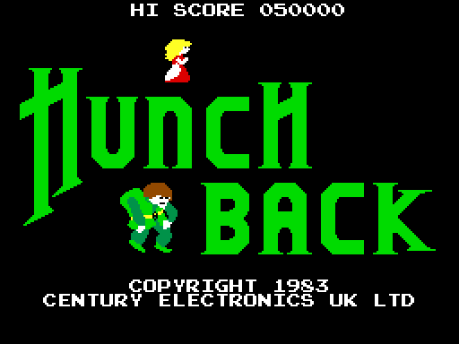
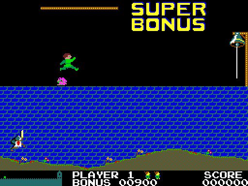
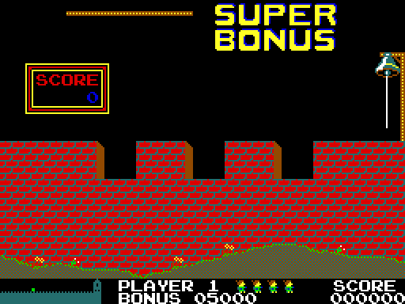
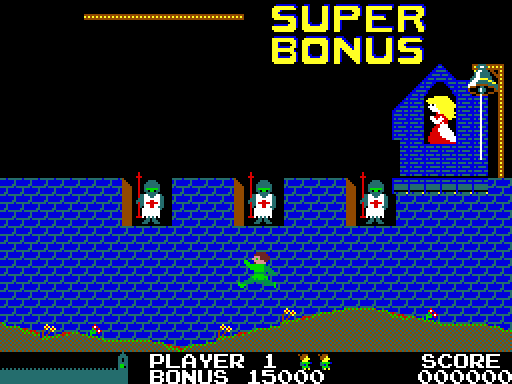

A version of Century Electronics' Hunchback for the SAM Coupé, written in Z80 assembly for screen mode 4. The layout, speeds, scoring and sounds were measured from the arcade ROMs, so it plays the way the arcade does.




Playing it
Boot Hunchback.mgt in SimCoupé or on a real SAM (insert the disk and press F9).
After the Lightning Studios intro, the loading screen stays up while the game loads and the game
starts by itself. Press any key on the title for the menu: 1 insert coin,
2 start, 3 redefine keys.
| Action | Keys |
|---|---|
| Left | O, cursor left, 6 (joystick) |
| Right | P, cursor right, 7 (joystick) |
| Jump | SPACE, cursor up, 0 or 9 (joystick) |
Run along the castle wall and ring the bell at the far end before the climbing knight reaches the top. Jump the fireballs, arrows, gaps and pikemen, swing across the fire pits on the ropes, and rescue Esmeralda from her tower on screen 15.
What's in it
- All 15 arcade screens in arcade order, then the belfry bonus screen, then round again faster.
- Arcade timing and scoring measured from the ROMs: walking and jump speeds, missile timings, the knight's climb, the bell bonus, and five bells in a row for the super bonus. Losing a life empties the bell rope, as in the arcade.
- Arcade sound, taken from the arcade's sound CPU frame by frame and replayed on the SAA1099.
- Attract mode with the title, a demo game, the league table and the instructions, plus coins and credits, redefinable keys, name entry for the top five, and a bonus man at 10,000.
- Smooth display: double-buffered at 25 frames a second, with no tearing.
The castle wall changes colour as you go, following the colour table on Century's original board:
Building from source
python3 build.py path/to/HunchbackFN.mgt [Hunchback.mgt]
You need Python 3 and numpy. The build reads the graphics from the original artwork disk,
HunchbackFN.mgt, which isn't included in the repository. It cuts the sprites straight
out of those screens, assembles the game with the bundled Z80 assembler, and writes a bootable
MasterDOS disk. The full description of the game and the arcade measurements is in the
manual.
Credits
Hunchback © 1983 Century Electronics. Graphics from the HunchbackFN.mgt artwork
disk; intro from Lightning Studios. Arcade behaviour checked against the MAME ROM sets
hunchbkd and hunchbak. No ROMs are included.